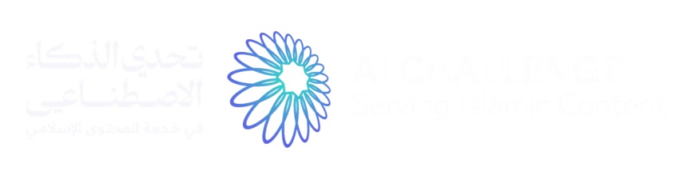
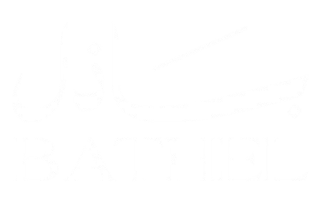
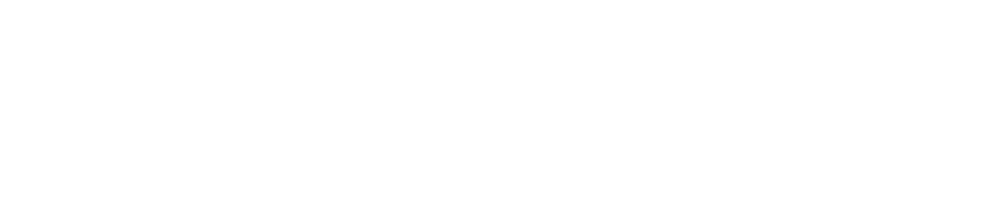
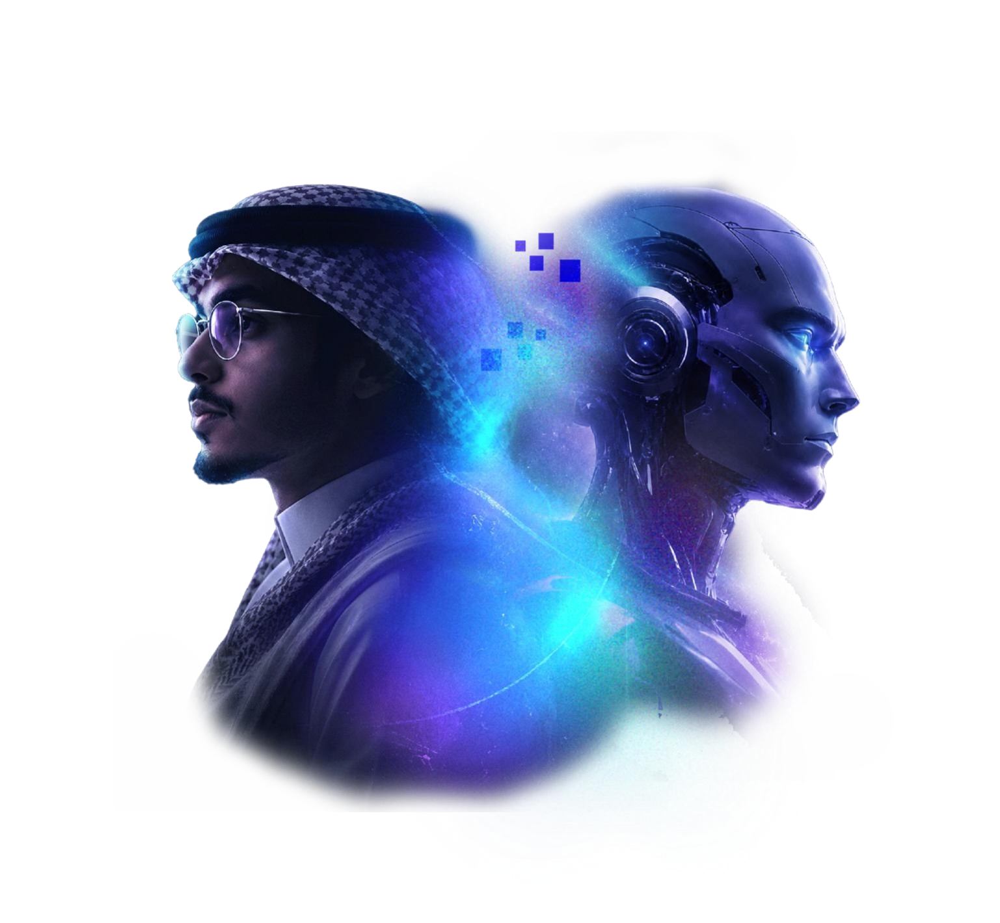
يتعرّف كثير من غير المسلمين على الإسلام عبر محركات البحث وأدوات الذكاء الاصطناعي العامة
تطبيق للمستفيد يبدأ من الكاميرا، ومحتواه تبنيه وتعتمده المؤسسات العلمية في بوابتها
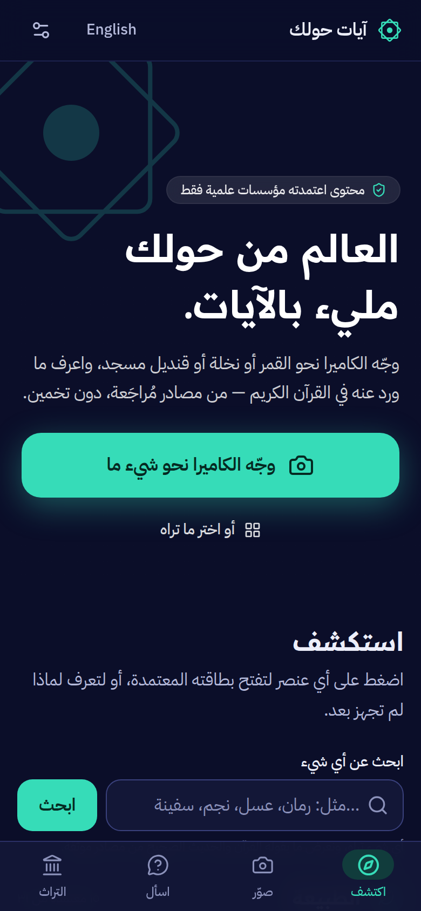
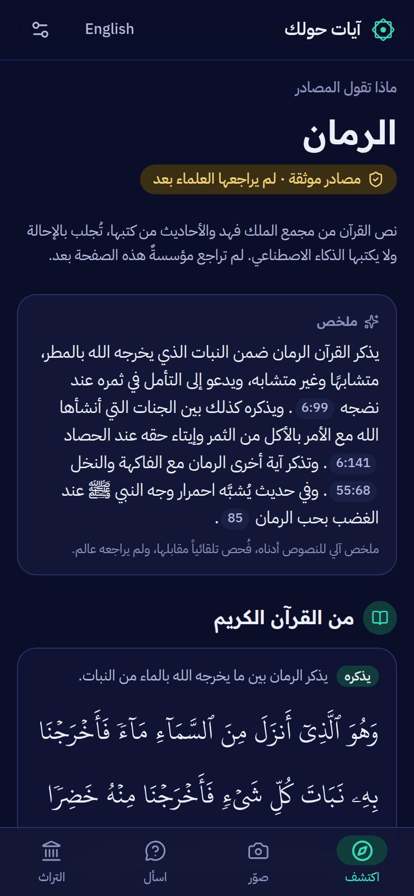
٢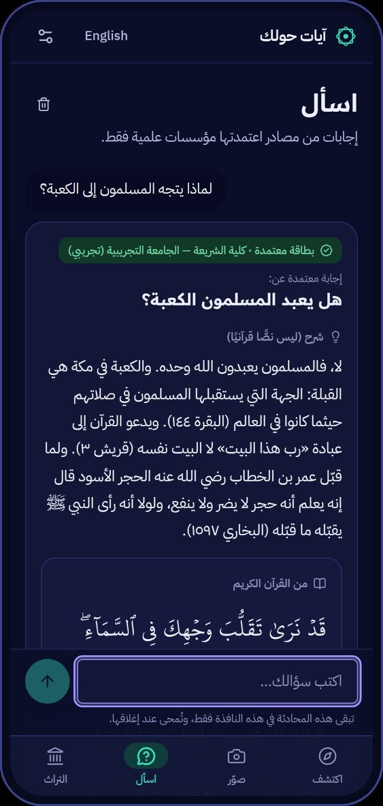
٤الذكاء الاصطناعي لا يكتب نص آية ولا حديث أبدًا؛ يقترح أرقامًا فقط، والنص يُجلب من المصدر بالمرجع
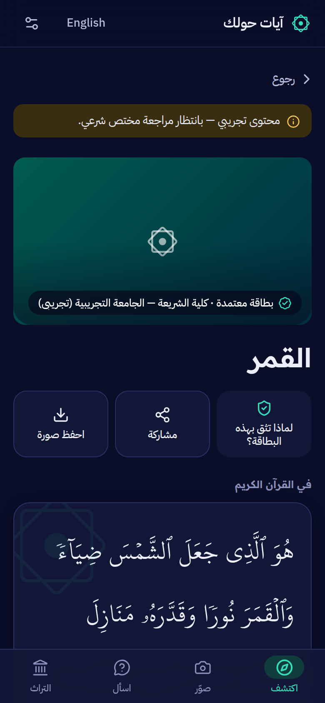
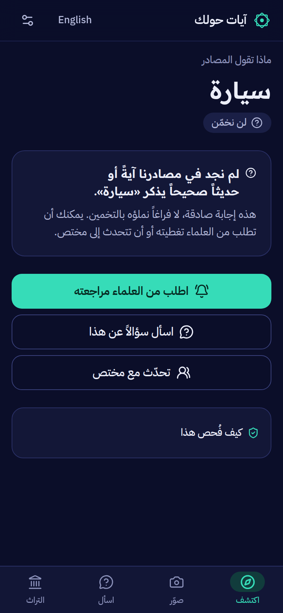
لكل مؤسسة مساحة عمل وأدوار وسياسة مراجعة، ولا يصل شيء إلى الزائر قبل اعتمادها
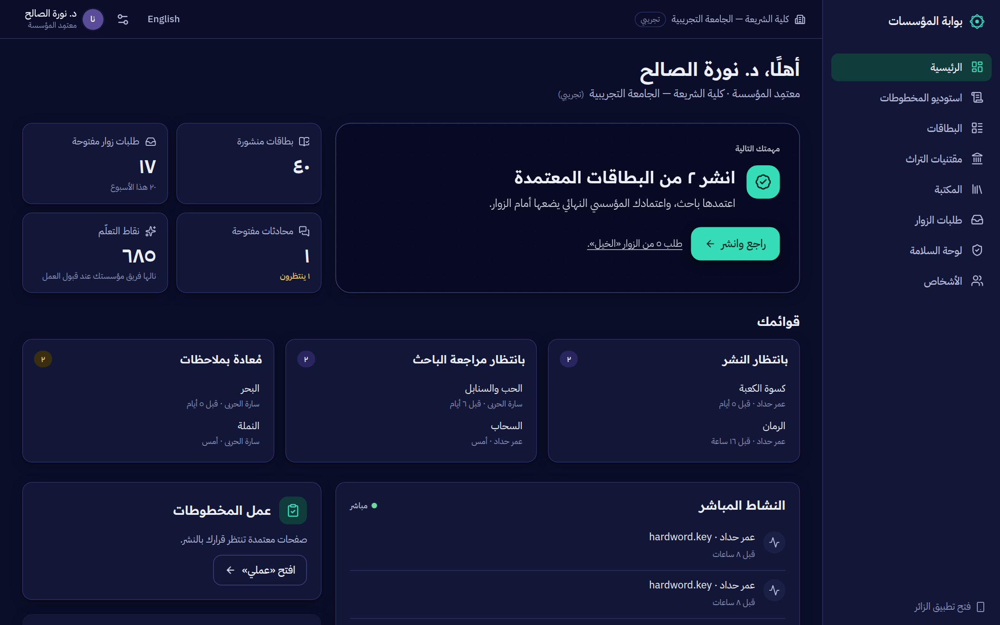
١ ٢ ٣ ٤ ٥فضول الزوار يصنع جدول أعمال المؤسسة، والتحقق المتدرج يضمن ألا يُنشر شيء دون مراجعة علمية
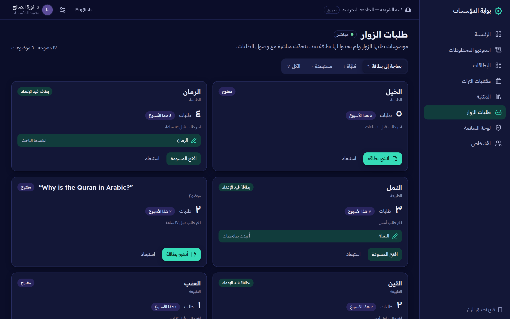
الطلبات الأكثر سؤالًا أولًا، وزر «صِغ بطاقة»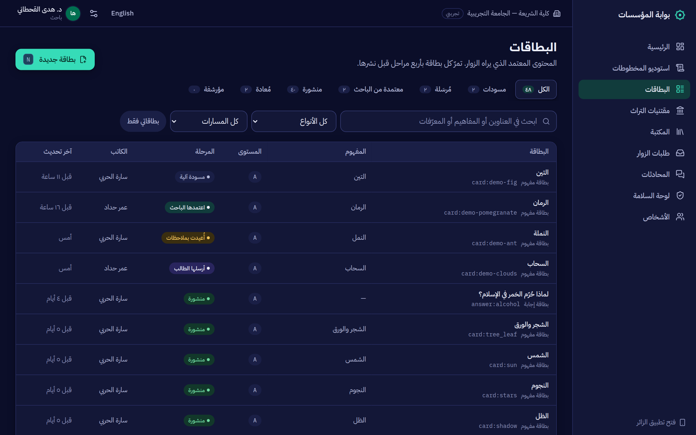
كل بطاقة بمرحلتها ومستواها ونسخهاالآلة تكتب المسودة، والطالب يصحح، والباحث يراجع، والمؤسسة تعتمد وتنشر للعامة
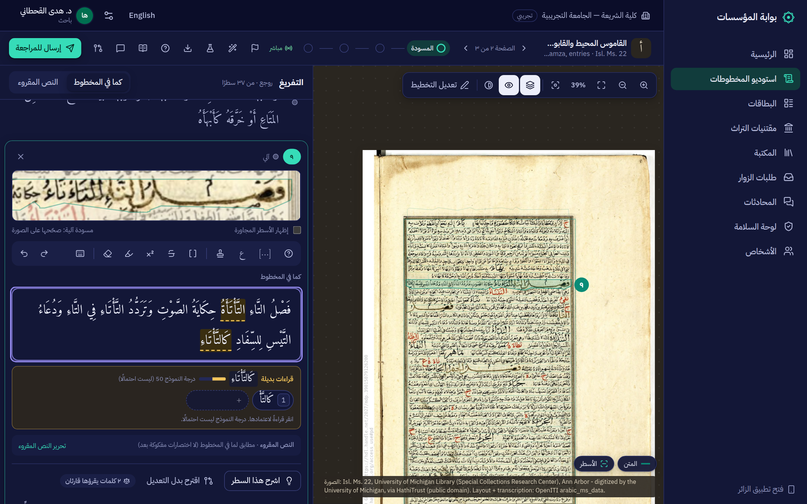
١ ٢ ٣ ٤ ٥ ٦الكلمة الصعبة يقرؤها شخصان دون أن يرى أحدهما قراءة الآخر؛ إن اتفقا اعتُمدت، وإن اختلفا حكّم بينهما باحث
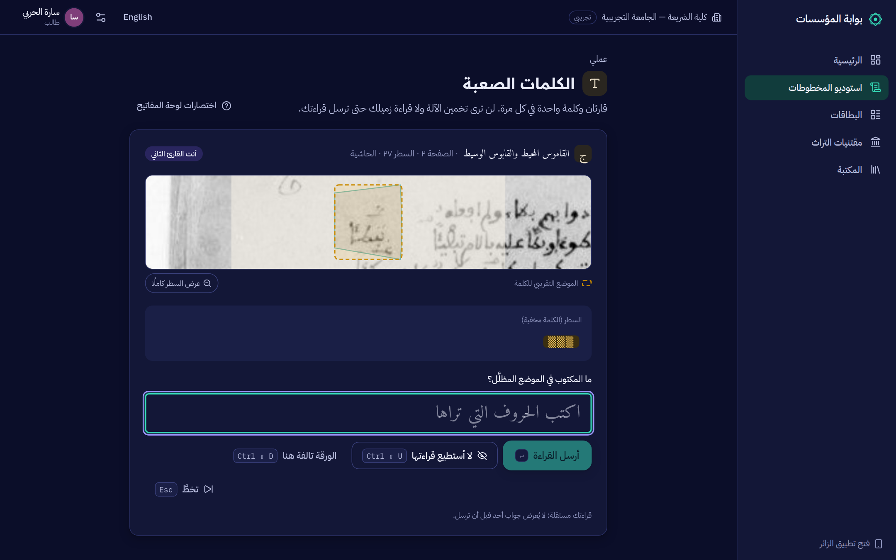
١ ٢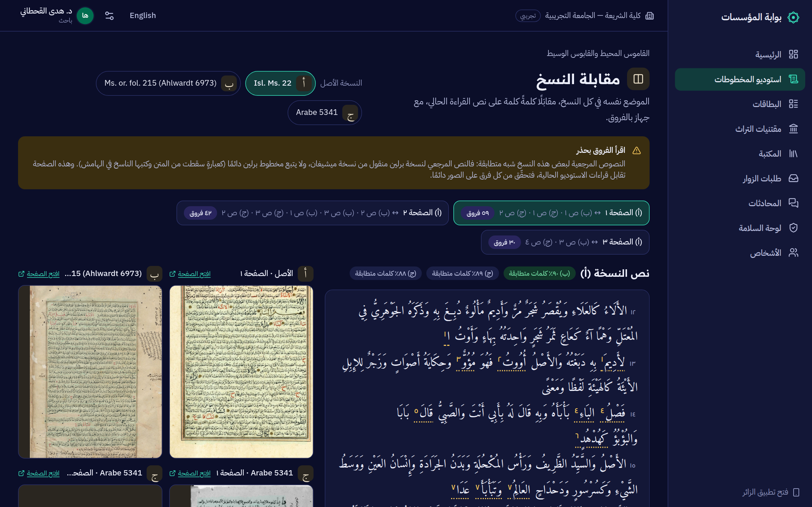
٣ ٤كل تصحيح واعتماد ورفض يُحفظ بياناتِ تدريب لنموذج عربي مفتوح، فتتحسن المسودة التالية
| العمل في البوابة | يصبح بيانات تدريب |
|---|---|
| تصحيح الطالب لسطر | زوج (مسودة الآلة ← النص الصحيح) لتعلّم قراءة الخط |
| قراءة مزدوجة + تحكيم | حقيقة أرضية للكلمات الصعبة نفسها |
| إعادة الباحث بملاحظة | زوج تفضيل: المرفوض مقابل المعتمد، مع السبب |
| اعتماد بطاقة | مثال ذهبي لإجابة مسندة بمستواها ومصادرها |
| مقابلة النسخ | فروق النسخ لنموذج يفهم اختلاف الرسم |
ارفع هاتفك نحو السماء: الموقع والوقت والبوصلة تكفي لمعرفة النجم واسمه العربي
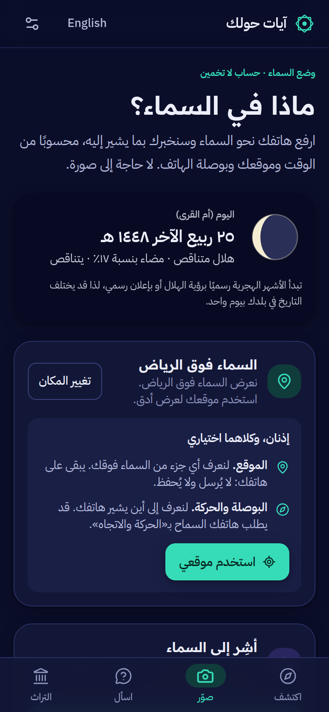
١٢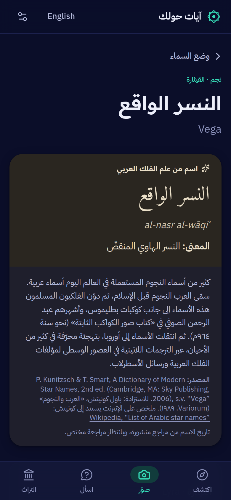
٣٤المستفيد يقرأ من المحتوى المعتمد، والمؤسسات تبنيه وتعتمده، والمعتمد يحسّن النموذج
كل رقم هنا ناتج تشغيل فعلي محفوظ في المستودع، ويُعاد قياسه من «لوحة السلامة» داخل البوابة بضغطة زر
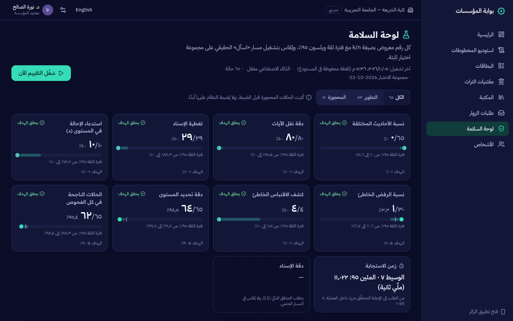
أدوات اليوم تحل جزءًا واحدًا من التجربة
| المنتج | ما يُتقنه | ما ينقصه مقارنةً بنا |
|---|---|---|
| Ansari | إجابات بمصادرها ودرجات الأحاديث | لا كاميرا ولا مسار تراث، ولا إحالة إلى مختص |
| Fanar-Sadiq | استرجاع إسلامي مع تحقق من اقتباس الآيات | لا سلسلة اعتماد مؤسسي ولا مختص بشري |
| Ayah | كاميرا تعرض موضع الكلمة في القرآن | لمتعلمي العربية، ولا طبقة تحقق |
| Muslim Pro وتطبيقات مشابهة | انتشار واسع | توليد حر من الصور، وهو ما تمنعه معايير التحدي |
| Transkribus / eScriptorium | تفريغ المخطوطات العربية | لا يقدّم محتوى للتعريف بالإسلام |
| Rawdah · WhyIslam | دعوة بشرية مباشرة | لا مدخل بالذكاء الاصطناعي ولا كاميرا |
| آيات حولك | يبدأ مما يراه الزائر، ومختص بشري عند الطلب | يجمع ذلك كله، ولا يعرض إلا ما اعتمدته مؤسسة |
التطبيق مجاني للمستفيد دائمًا، والمحتوى ملك للمؤسسات العلمية التي تعتمده قبل نشره
ثلاثة تخصصات: التقنية، والعلم الشرعي، والفن
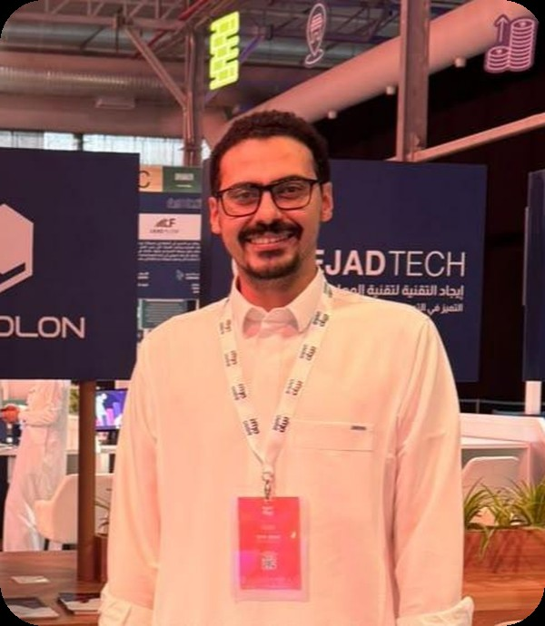
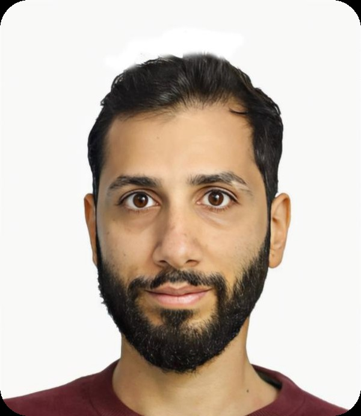
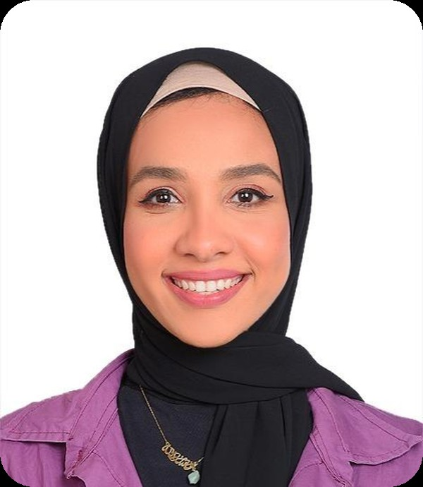
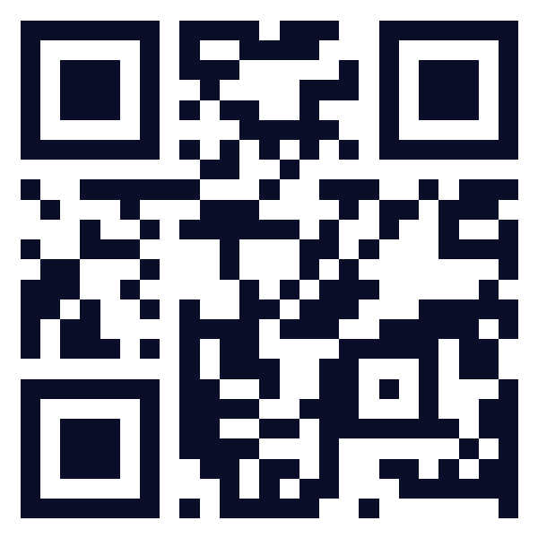